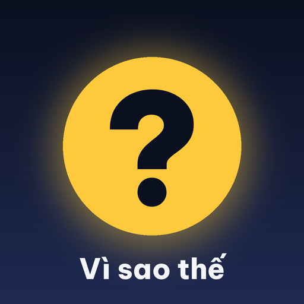

Vi sao the PublisherĐiều khoản sử dụng — Vi sao the Publisher
- Vi sao the Publisher là công cụ nội bộ của kênh "Vì sao thế?". Công cụ chỉ dùng để đăng các video do chính kênh sản xuất lên tài khoản YouTube và TikTok của kênh.
- Công cụ không cung cấp dịch vụ cho người dùng bên ngoài, không bán, không thu phí.
- Công cụ chỉ thực hiện những hành động mà chủ tài khoản đã cấp quyền qua đăng nhập OAuth của YouTube/TikTok. Chủ tài khoản có thể thu hồi quyền bất cứ lúc nào trong phần cài đặt bảo mật của Google hoặc TikTok.
- Nội dung đăng tải phải tuân thủ Nguyên tắc cộng đồng và Điều khoản dịch vụ của YouTube và TikTok.
- Công cụ được cung cấp "nguyên trạng", không kèm bảo đảm. Điều khoản có thể được cập nhật; ngày hiệu lực ở đầu trang sẽ thay đổi theo.
- Liên hệ: lntoan@gmail.com
Terms of Service — Vi sao the Publisher
- Vi sao the Publisher is an internal tool of the "Vì sao thế?" channel. It is used only to publish videos produced by the channel to the channel's own YouTube and TikTok accounts.
- The tool does not provide services to third-party users and is not sold or charged for.
- The tool only performs actions the account owner has authorized through YouTube/TikTok OAuth login. The owner can revoke access at any time in Google or TikTok security settings.
- All published content must comply with the Community Guidelines and Terms of Service of YouTube and TikTok.
- The tool is provided "as is", without warranty. These terms may be updated; the effective date above will change accordingly.
- Contact: lntoan@gmail.com